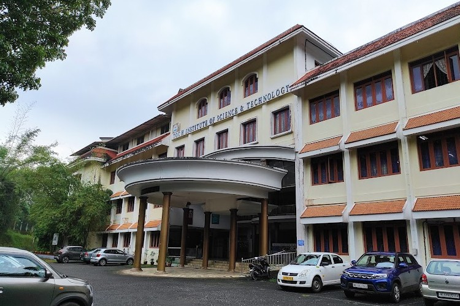
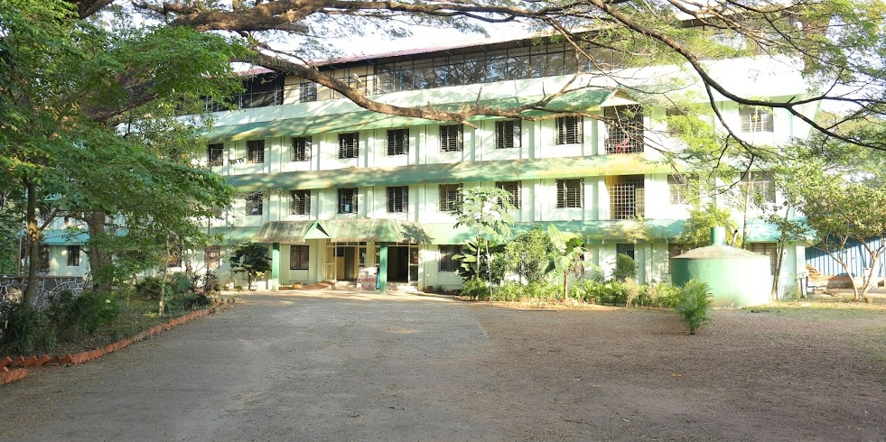
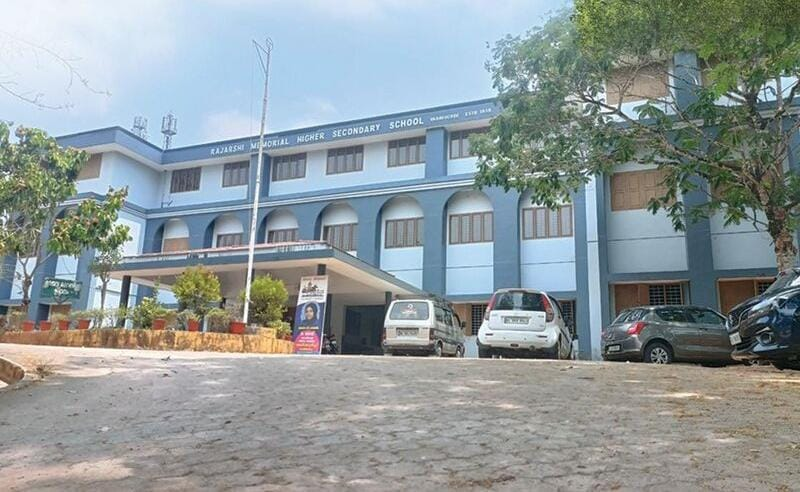
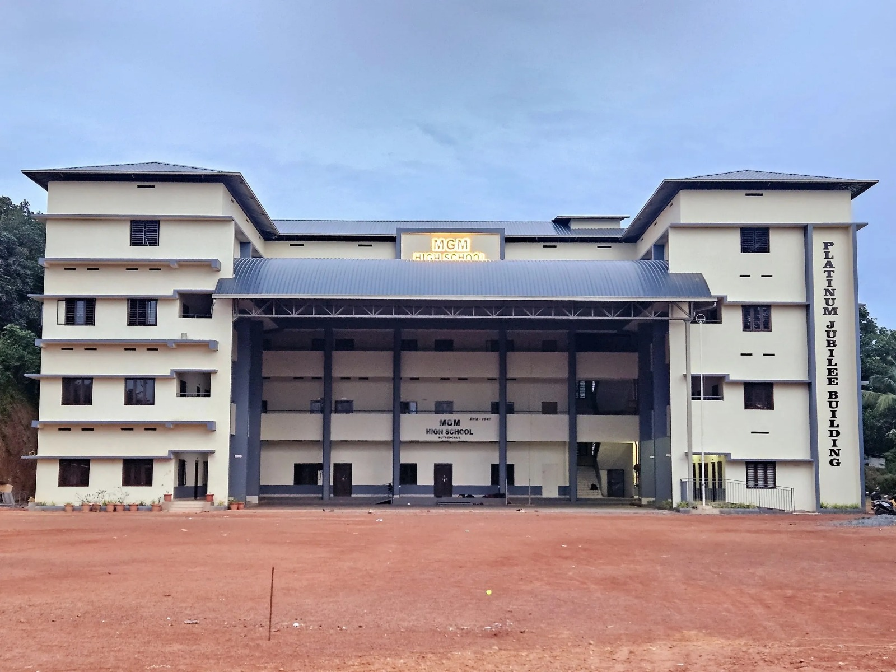

Education

Bachelor's Degree
Computer Science Engineering
TocH Institute Of Science and Technology
2024 - 2027
Persueing Bachelor's degree in Computer Science Engineering with focus on software development, data structures, algorithms, and web technologies. Participated in various coding competitions and technical events.
Key Achievements:
- CGPA: 8.3/10
- Led the Non Technical in Techfest
- Participent of pegasus national Hackathon 2025

Diploma Degree
Computer Science Engineering
Govt Women's Polytechnic College
2021 - 2024
Completed Diploma degree in Computer Science Engineering with focus on software development, data structures, algorithms, and web technologies.
Key Achievements:
- CGPA: 8.6/10
- Nss volenteer

Higher Secondary Education
Science Stream (PCM)
Rajarshi Memorial Higher Secondary School
2020 - 2021
Completed higher secondary education with Physics, Chemistry, and Mathematics as major subjects. Developed strong analytical and problem-solving skills that laid the foundation for my engineering studies.
Key Achievements:
- Percentage: 85%

Secondary Education
State Board
Mahatma Gandhi Memorial High School
2015 - 2018
Completed secondary education with excellent grades across all subjects. Developed interest in mathematics and computer science during this period, which influenced my career choice in technology.
Key Achievements:
- CGPA: 9.2/10
- Perfect score in Mathematics
- Class Representative for 2 consecutive years
Certifications & Courses
TCS iON career Edge-Young Professional
online session - 2023
IEDC Summit 2023 and 2024 by Kerala Startup Mission
Summit - 2023-2024
participation certificate in Hack For Tommorow
MEC Hackathon- 2026
Eleven's Code Surge participation certificate
Hackathon - 2026
Pegasus 4.0 Hackathon-Special Mention Award
Hackathon - 2026